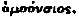

http://biblelight.net
SECOND EDITION.
BOOK 1.
CONCERNING THE MOST EXALTED TRINITY AND THE
CATHOLIC FAITH AND PROVIDING THAT NO ONE
SHALL DARE TO PUBLICLY OPPOSE THEM.
1. The Emperors Gratian, Valentinian, and Theodosius to the people of the City of Constantinople.We desire that all peoples subject to Our benign Empire shall live under the same religion that the Divine Peter, the Apostle, gave to the Romans, and which the said religion declares was introduced by himself, and which it is well known that the Pontiff Damascus, and Peter, Bishop of Alexandria, a man of apostolic sanctity, embraced; that is to say, in accordance with the rules of apostolic discipline and the evangelical doctrine, we should believe that the Father, Son, and Holy Spirit constitute a single Deity, endowed with equal majesty, and united in the Holy Trinity.
(1) We order all those who follow this law to assume the name of Catholic Christians, and considering others as demented and insane, We order that they shall bear the infamy of heresy; and when the Divine vengeance which they merit has been appeased, they shall afterwards be punished in accordance with Our resentment, which we have acquired from the judgment of Heaven.
Dated at Thessalonica, on the third of the Kalends of March, during the Consulate of Gratian, Consul for the fifth time, and Theodosius.
2. The Same Emperors to Eutropius, Praetorian Prefect.
Let no place be afforded to heretics for the conduct of their ceremonies, and let no occasion be offered for them to display the insanity of their obstinate minds. Let all persons know that if any privilege has been fraudulently obtained by means of any rescript whatsoever, by persons of this kind, it will not be valid. Let all bodies of heretics be prevented from holding unlawful assemblies, and let the name of the only and the greatest God be celebrated everywhere, and let the observance of the Nicene Creed, recently transmitted to Our ancestors, and firmly established by the testimony and practice of Divine Religion, always remain secure.
(1) Moreover, he who is an adherent of the Nicene Faith, and a true believer in the Catholic religion, should be understood to be one [pg. 10] who believes that Almighty God and Christ, the son of God, are one person, God of God, Light of Light; and let no one, by rejection, dishonor the Holy Spirit, whom we expect, and have received from the Supreme Parent of all things, in whom the sentiment of a pure and undefiled faith flourishes, as well as the belief in the undivided substance of a Holy Trinity, which true believers indicate by the Greek word  These things, indeed do not require further proof, and should be respected.
(2) Let those who do not accept those doctrines cease to apply the name of true religion to their fraudulent belief; and let them be branded with their open crimes, and, having been removed from the threshhold of all churches, be utterly excluded from them, as We forbid all heretics to hold unlawful assemblies within cities. If, however, any seditious outbreak should be attempted, We order them to be driven outside the the walls of the City, with relentless violence, and We direct that all Catholic Churches, throughout the entire world, shall be placed under the control of the orthodox bishops who have embraced the Nicene Creed.
Given at Constantinople, on the fourth of the ides of January, under the Consulate of Flavius Eucharius and Flavius Syagrius.
3. The Emperor Martian to Palladius, Praetorian Prefect.
No one, whether he belongs to the clergy, the army, or to any other condition of men, shall, with a view to causing a tumult and giving occasion to treachery, attempt to discuss the Christian religion publicly in the presence of an assembled and listening crowd; for he commits an injury against the most reverend Synod who publicly contradicts what has once been decided and properly established; as those matters relative to the Christian faith have been settled by the priests who met at Chalcedony by Our order, and are known to be in conformity with the apostolic explanations and conclusions of the three hundred and eight Holy Fathers assembled in Nicea, and the hundred and fifty who met in this Imperial City; for the violators of this law shall not go unpunished, because they not only oppose the true faith, but they also profane its venerated mysteries by engaging in contests of this kind with Jews and Pagans. Therefore, if any person who has ventured to publicly discuss religious matters is a member of the clergy, he shall be removed from his order; if he is a member of the army, he shall be degraded; and any others who are guilty of this offence, who are freemen, shall be banished from this most Sacred City, and shall be subjected to the punishment prescribed by law according to the power of the court; and if they are slaves, they shall undergo severest penalty.
Given at Constantinople, on the eighth of the Ides of February, under the consulship of Patricius.
4. John, Bishop of the City of Rome, to his most Illustrious and Merciful Son Justinian.
Among the conspicuous reasons for praising your wisdom and gentleness, Most Christian of Emperors, and one which radiates light [pg. 11]as a star, is the fact that through love of the Faith, and actuated by zeal for charity, you, learned in ecclesiastical discipline, have preserved reverence for the See of Rome, and have subjected all things to its authority, and have given it unity. The following precept was communicated to its founder, that is to say, the first of the Apostles, by the mouth of the Lord, namely: "Feed my lambs."
This See is indeed the head of all churches, as the rules of the Fathers and the decrees of the Emperors assert, and the words of your most reverend piety testify. It is therefore claimed that what the Scriptures state, namely, "By Me Kings reign, and the Powers dispense justice;" will be accomplished in you. For there is nothing which shines with a more brilliant lustre than genuine faith when displayed by a prince, since there is nothing which prevents destruction as true religion does, for as both of them have reference to the Author of Life and Light, they disperse darkness and prevent apostasy. Wherefore, Most Glorious of Princes, the Divine Power is implored by the prayers of all to preserve your piety in this ardor for the Faith, in this devotion of your mind, and in this zeal for true religion, without failure, during your entire existence. For we believe that this is for the benefit of the Holy Churches, as it was written, "The king rules with his lips," and again, "The heart of the King is in the hand of God, and it will incline to whatever side God wishes"; that is to say, that He may confirm your empire, and maintain your kingdoms for the peace of the Church and the unity of religion; guard their authority, and preserve him in that sublime tranquillity which is so grateful to him; and no small change is granted by the Divine Power through whose agency a divided church is not afflicted by any griefs or subject to any reproaches. For it is written, "A just king, who is upon his throne, has no reason to apprehend any misfortune."
We have received with all due respect the evidences of your serenity, through Hypatius and Demetrius, most holy men, my brothers and fellow-bishops, from whose statements we have learned that you have promulgated an Edict addressed to your faithful people, and dictated by your love of the Faith, for the purpose of overthrowing the designs of heretics, which is in accordance with the evangelical tenets, and which we have confirmed by our authority with the consent of our brethren and fellow bishops, for the reason that it is in conformity with the apostolic doctrine.
The following is the text of the letter of the Emperor Justinian, Victorious, Pious, Happy, Renowned, Triumphant, always Augustus, to John, Patriarch, and most Holy Archbishop of the fair City of Rome:
With honor to the Apostolic See, and to your Holiness, which is, and always has been remembered in Our prayers, both now and formerly, and honoring your happiness, as is proper in the case of one who is considered as a father, We hasten to bring to the knowledge of Your Holiness everything relating to the condition of the Church, as We have always had the greatest desire to preserve the unity of your Apostolic See, and the condition of the Holy Churches of God, as they [pg. 12] exist at the present time, that they may remain without disturbance or opposition. Therefore, We have exerted Ourselves to unite all the priests of the East and subject them to the See of Your Holiness, and hence the questions which have at present arisen, although they are manifest and free from doubt, and according to the doctrines of your Apostolic See, are constantly firmly observed and preached by all priests, We have still considered it necessary that they should be brought to the attention of Your Holiness. For we do not suffer anything which has reference to the state of the Church, even though what causes difficulty may be clear and free from doubt, to be discussed without being brought to the notice of Your Holiness, because you are the head of all the Holy Churches, for We shall exert Ourselves in every way (as has already been stated), to increase the honor and authority of your See.
[pg. 125]
One Hundred and Thirty-First New Constitution.
[Novella 131 was issued in 545 A.D.]
The Emperor Justinian to Peter, Most Glorious Imperial Praetorian Prefect.
PREFACE. We enact the present law with reference to ecclesiastical rules and privileges and other subjects in which holy churches and religious establishments are intrusted.
Chapter I. Concerning Four Holy Councils.
Therefore We order that the sacred, ecclesiastical rules which were adopted and confirmed by the four Holy Councils, that is to say, that of the three hundred and eighteen bishops held at Nicea, that of the one hundred and fifty bishops held at Constantinople, the first one of Ephesus, where Nestorius was condemned, and the one assembled at Chalcedon, where Eutyches and Nestorius were anathematized, shall be considered as laws. We accept the dogmas of these four Councils as sacred writings, and observe their rules as legally effective.
Chapter II. Concerning The Precedence of Partriarchs.
Hence, in accordance with the provisions of these Councils, We order that the Most Holy Pope of ancient Rome shall hold the first rank of all the Pontiffs, but the Most Blessed Archbishop of Constantinople, or New Rome, shall occupy the second place after the Holy Apostolic See of ancient Rome, which shall take precedence over all other sees.
Source: Corpus Juris Civilis (The Civil Law, the Code of Justinian), by S.P. Scott, A.M., published by the Central Trust Company, Cincinnati, copyright 1932, Volume 12 [of 17], pages 9-12, 125.
|
http://biblelight.net |